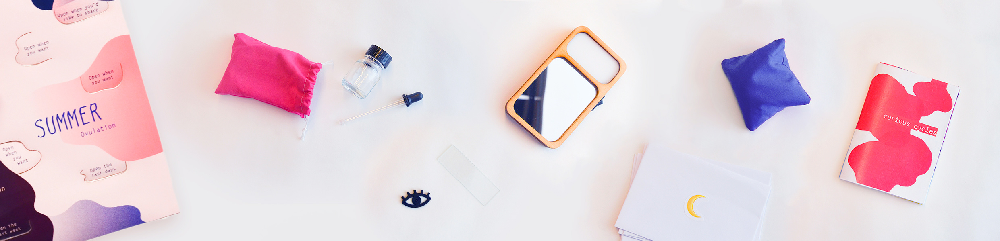
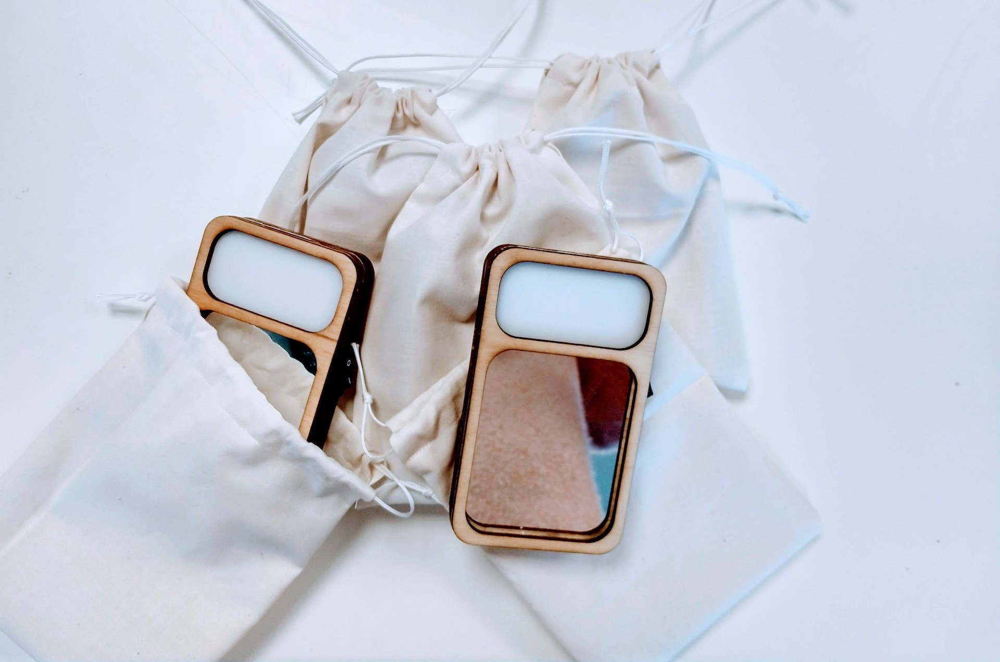
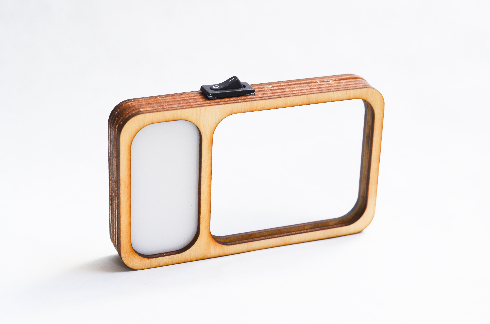
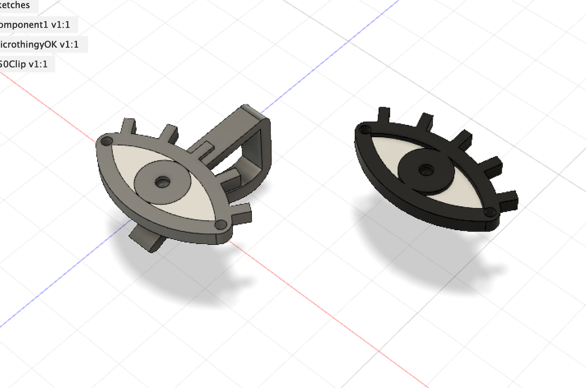
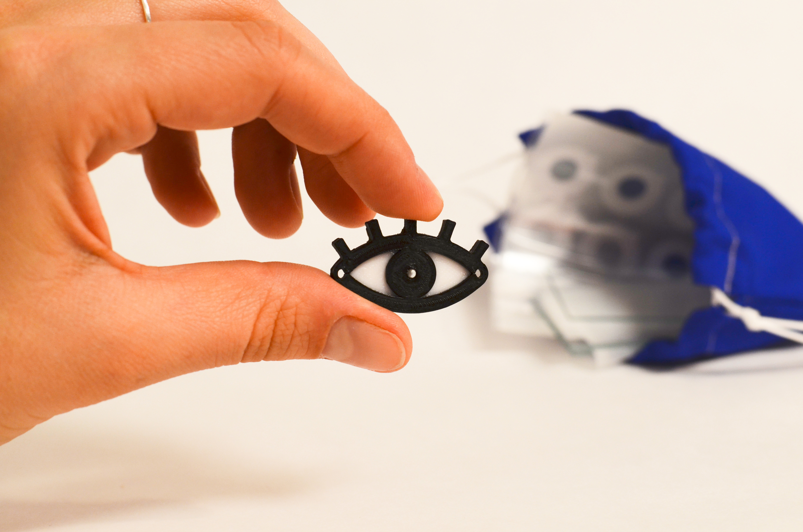
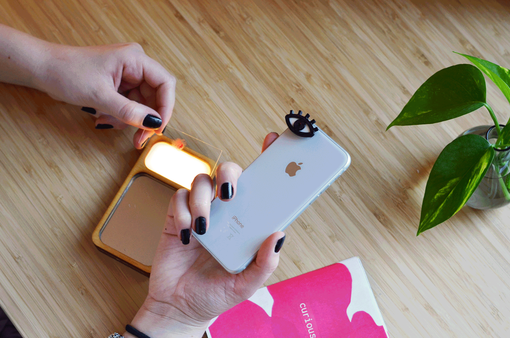
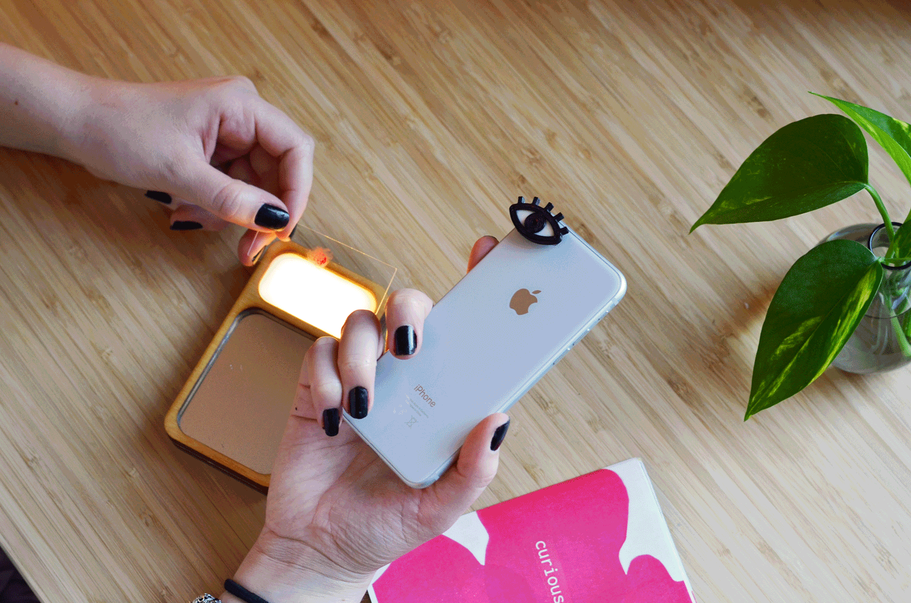
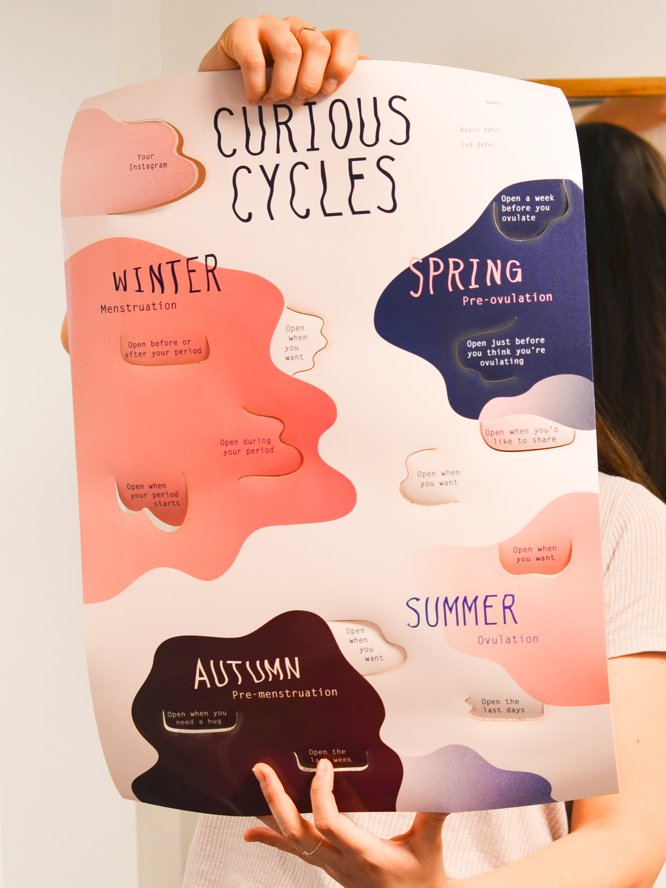
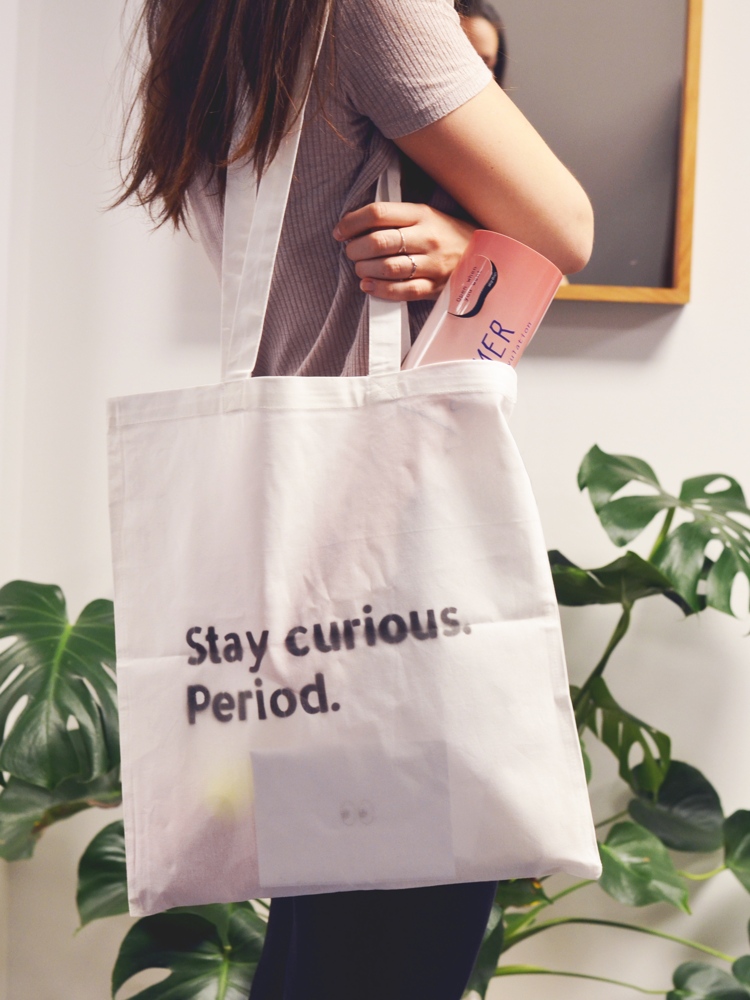

Curious Cycles
Master thesis project and CHI2020 publication: Touching and Being in Touch with the Menstruating Body
Curious Cycles is a collection of objects designed to be interacted with over the period of a month, the approximate length of a menstrual cycle. They are designed to be used in the home, with the intention of allowing participants to reflect on their cycle as a whole, attending daily to any changes, as well as providing a choice to engage with these questions individually or with cohabitants, partners, or others.
To design Curious Cycles I spent time attuning to my own cycle, and with my supervisor and the researchers within the Digital Women's Health group at KTH, we conducted bodily exercises, experiments, workshops and knowledge exchanges with experts.

Drawings by Marie Louise Juul Søndergaard and me.
Through an iterative process of designing and prototyping I built five sets of the kit and distributed a call for participation. The kit consisted of a physical and a digital part: a tote bag holding physical objects, and an individual Instagram account. The tote bag included tangible objects, an A2 poster, five envelopes with drawing or writing prompts and a zine with evocative imagery and text.
   The kit asked participants to closely observe their vulva, and to touch and observe their menstrual blood, cervical mucus and saliva under a microscope.
 

Through five women's experiences, we found that through 'touching' their menstruating body, participants tuned in to the changes of their cycle, a slow and caring process of being 'in touch' with their body / themselves. As opposed to dominant menstrual cycle technologies today that mainly obtain data about the body through sensors or self-tracking, in Curious Cycles, self-touch is a crucial part of exploring and better understanding one’s body.
A full paper on Curious Cycles has been accepted for publication at CHI2020! Coauthored by Marie Louise Juul Søndergaard, Marianela Ciolfi Felice and Madeline Balaam.Read the full paper (pre-print)
 You can follow the project's Instagram: @curiouscycles